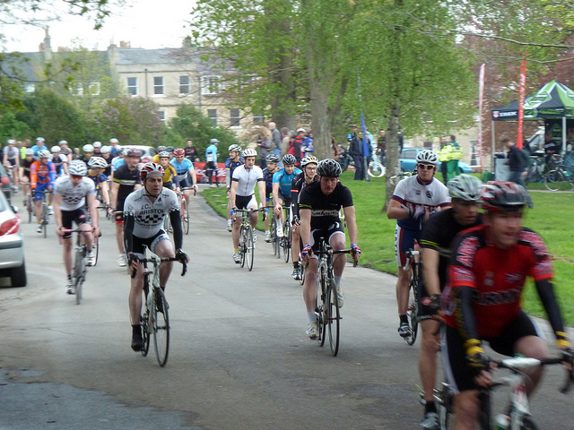
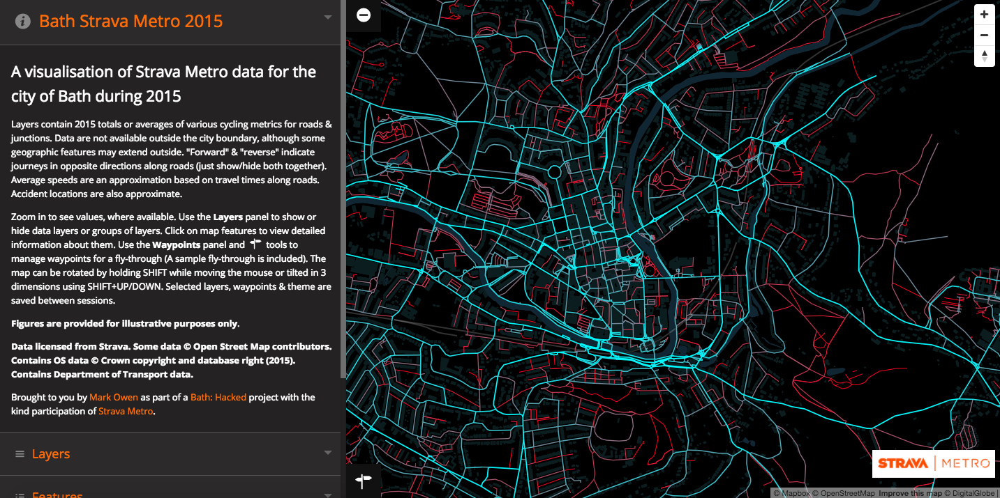
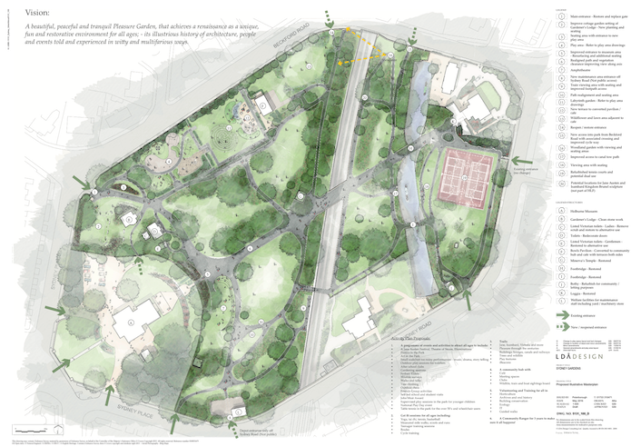

Case study: Bath Hacked
- Summary
- Facts and figures
- What is the challenge?
- How are they solving the problem?
- What was the impact of taking this approach?
- What lessons did they learn?
- How to cite this case study
 Cyclists taking part in a race through Bath. CC BY 2.0, uploaded by Liam Gladdy.
Summary
Like many other cities, Bath is expanding its cycling infrastructure. But because traffic count data for cyclists are very limited, understanding where changes and improvements are most needed is not a straightforward task. Together, the community groups of Bath Hacked and Cycle Bath acquired cycle tracking data from the athlete network Strava.
By analysing cycling traffic flows in 2015, and creating an interactive map, the groups have raised important evidence on which changes are needed most. A recent plan to renew Bath’s popular Sydney Gardens therefore also contains important improvements for cyclists.
This case is a strong reminder that a local data infrastructure does not only need technology but is revived through data users. Importantly, bottom-up initiatives, initiated by civic groups, can be a crucial driver for data-driven decision-making as well.
Facts and figures
Bath Hacked and Cycle Bath produced analyses and interactive visualisations of cycling movements in the city in 2015
Analyses were based on shared data with 129,568 activities logged by 12,139 Strava users
A recent plan to renew Bath’s popular Sydney Gardens now entails important improvements for cyclists
What is the challenge?
Extending and designing better cycling infrastructures has become a primary task for cities across the UK and EU. The need to lower city-centre carbon emissions, improve traffic flows and promote more sustainable transport solutions has driven urban planners to expand cycling paths throughout many cities. At the same time, civic action groups and individual citizens are requesting be involved in the design of these infrastructures.
From a planning perspective, redeveloping a city’s road infrastructure to be more cycle-friendly is a major challenge. This is not only true for large cities but also for medium-sized cities – such as Bath in southwest England. With fewer resources and smaller planning departments, the challenge to improve cycling infrastructure is significant. Similar to many other medium-sized cities, Bath’s road infrastructure is primarily designed for motorised traffic. Roads and pathways are therefore often either designed for cars or pedestrians, not for cyclists or people with impaired mobility.
Traditionally, infrastructure planning has been an intricate task. Street networks, particularly in cities, can be seen as legacy systems, which are very difficult to change once they have been set for up for the first time. Despite being one of the most intensely used pieces of public infrastructure, street-use data also remains surprisingly sparse. Induction loops, electronic cable counters, and other standard traffic-counting mechanisms amount to little more than isolated counts of traffic at infrastructural pressure points. They are neither capable of capturing traffic flows over an extended spatial area nor a period of time. Infrastructure and traffic-flow planning therefore relies heavily on punctual data and estimates.
The problem is even more acute for cyclist and pedestrian infrastructures because the common traffic-monitoring systems are also limited to counting cars or motor vehicles. Assessing flows of cyclists or pedestrians is usually beyond their capacity. Compared to cars, pedestrians however have a greatly expanded infrastructural network available, multiplying the options for movements across a city, and therefore increasing the need for data that covers movement flows comprehensively, rather than remote data points.
In Bath, the improvement of cycling infrastructure is a core discussion point between the council, citizens and community action groups such as CycleBath. Discussions continue around a number of areas, but have recently been focused on the re-design of the popular Sydney Gardens.
Civic action group CycleBath has been calling for improved cycling infrastructures. However, to substantiate debates about where to set up new cycle paths and ramps, more evidence is needed. The question is therefore how to find better insights on where Bath cyclist’s cycle, and how they could inform proposals for better cycle infrastructure design.
How are they solving the problem?
Bath’s cycling infrastructure solution is unconventional, and offers a good example of how non-government actors can help develop and enrich local data ecosystem and infrastructure.
The core output developed to fuel the discussion about Bath’s cycling infrastructure is an interactive visualisation of all cycle movements in Bath in 2015. Based on metro data acquired from the athletic tracking app Strava, the map allows users to explore which streets and pathways in Bath were most frequently used by cyclists. The tool was made public in May 2016 to give structured evidence on cyclist’s needs in the wake of various infrastructure discussions across the city.
 A screenshot of the Bath Strava Metro map.
Strava is a social network which allows amateur and professional athletes to assess and compare their fitness. Its tracking app, which is vital to the company’s data collection, is particularly popular among runners and cyclists. In 2015, cycling users logged 23 million rides reaching a distance of almost 685 million kilometers. While the company’s data has limitations, its broad user-base helps us to understand how cyclists and runners move around places around the world. In 2013, Strava developed Strava.metro – a service offering bespoke, city-based datasets. Strava.metro datasets are usually marketed as a commercial product and their price depends on the client’s requirements.
Community groups Cycle Bath and Bath Hacked contacted Strava in order to access some of this data. Helped by Bath Hacked’s local reputation as advocates of open data, Strava agreed to share the 2015 cycling data for the city of Bath. This contained highly granular geospatial data on how cyclists were travelling across the city. Ranging from 1 January to 31 December 2015, it lists 129,568 activities logged by 12,139 Strava users.
To track users, Strava collects data points every five seconds during activities. However, the data provided to Bath Hacked was not in its raw form but aggregated. Some of its crucial characteristics are that:
The dataset only includes data publicly shared by Strava users with the company.
The data has been anonymised to remove personal or sensitive data.
All data is aggregated, allowing Bath Hacked to query how many cyclists used a specific road, or went through an intersection at a specific time of day.
The data also includes information on waiting times at intersections, the direction of travel and whether a trip was logged as a commute.
The data includes some demographics on Bath’s Strava users.
Contractual limitations do not allow Bath Hacked to publish the dataset or extracts from it openly. The dataset (or subsets of it) cannot be published or shared with third parties, but Strava gave permission for a variety of interactive visualisations to be created to help Bath: Hacked present the data in useful ways.
For Bath’s civic hacking and cycling community, Strava’s willingness to share the data to encourage innovative experiments, meant that a valuable resource was available to inform policies on Bath’s cycling infrastructure.
Extracting, analysing and visualising the data
Lead by Mark Owen, a member of Bath: Hacked, local developers analysed the data and developed the interactive visualisation with help and feedback from Bath cyclists and Strava users. This happened in three steps: first, summary statistics were extracted from the data, then static map visualisations and time-lapse videos were produced before the interactive map visualisation itself.
According to Adam Reynolds, who worked on the project as a member of both Bath Hacked and Bath Cycling, the feedback from the cycling community and collaboration with the council helped reveal the limitations and characteristics of the data. A crucial concern was how representative Strava’s data was. While comparing it with readily available census data from 2011 suggested a largely matching demographic distribution across men’s and women’s age groups, it is difficult to assess how representative the count data is.
Bath Hacked therefore asked the council for count data on a towpath section through the popular Sydney Gardens. While Strava users had recorded ca 3,500 rides throughout the entire year, the council had counted more than 700 movements in only one day in July. Both counts cannot be directly compared since the council data included all towpath users – but the difference suggests that Strava data only represents a fraction of cycling movements occurring in Bath. However, assessing the skew or potential bias of both data is difficult at this stage since both data collection modes are prone to substantial constraints.
Bath City Strava Metro 2015 Daily Total Edge Athlete Count, uploaded by Mark Owen.
Feedback from the cycling community also helped to understand a puzzling pattern in the data: unsurprisingly, the months between April and September as well as weekends are generally very busy. But why were Tuesdays and Wednesdays busy while Mondays were far more quiet throughout the year?
Bath Hacked reached out to the cycling community and found that many cyclists did not cycle to work at the start of the week because they would want to bring clothes to their offices and rest from long Sunday rides. This shows how important communities can be in understanding local and urban data infrastructure.
For Bath Hacked and Cycle Bath the ultimate goal of the Strava data analysis was to influence decision making on Bath’s future cycling infrastructure. So they needed an opportunity to feed evidence from the analysis into the discussion. This moment arrived when Bath Council called a public consultation and gathered residents’ demands for Bath’s popular Sydney Gardens to be improved.
For the meeting, Adam Reynolds again dug into the data to better understand Sydney Park’s crucial function as a pathway for local cyclists. The Strava data revealed important insights into how Sydney Gardens were used. First: cyclists were slowing down frequently at a specific spot in the park – a stairway connecting the park with the canal towpath beneath it. This original layout was intended partly to separate pedestrians from cyclists, who would not use the stairway to access the canal towpath. Strava’s tracking data however suggested that even if it meant having to dismount and carry their bike for a few steps, cyclists prefered this way to leave or access the canal towpath rather than long detours.
Bath City Strava Metro 11th June 2015 Minute-By-Minute Athlete Count, uploaded by Mark Owen.
The stairs therefore did not discourage cyclists from taking the direct route, and created a bottleneck as cyclists carrying their bike up or down the stairs held up pedestrians. Since the towpath also proved to be one of the main ways cyclists took to enter into the city, improvements to it could strengthen the case for cycling over commuting by car. The stairs also impeded access for other infrastructure users with wheels – including wheelchair users or families with pushchairs.
Another key question was whether an improved infrastructure layout with better (i.e. concrete) pavements and broader pathways open to cyclists would also lead to quicker, more dangerous cycling. This was not backed by Strava data – instead some of the broader, shared pathways running through Sydney Gardens showed even slower cycling speeds. As the discussion about the future layout of both Sydney Gardens an Bath’s wider infrastructure is still ongoing, Bath Hacked’s analysis has helped to shed some light on conventional arguments and views that are not backed up by tracking data from Strava.
Open innovation in action
The process of acquiring, analysing and using the Strava data analysis is a good example of open innovation.
Data acquired from and shared by Strava represents an external asset incorporated into public discourse. The analysis and visualisation only became possible with feedback from the cycling community. And evidence from data analytics influencing decision making on Bath’s cycling infrastructure shows data-driven decision making in practice.
What was the impact of taking this approach?
The impact of the work of Bath Hacked is still emerging and growing. In August 2016, Bath Council submitted an application to redesign Sydney Gardens with funds from the Heritage Lottery Fund. The current plan is based on the first consultation, discussed at the end of the previous section, which took place in July 2016.
The plan has been influenced by the evidence found from analysing Strava data in two areas. Access to the canal towpath is set to be improved, along with access into the park from Beckford Road with a new crossing and cycle way.
If the application is successful, 18 months of further consultations will follow to refine plans.
 Masterplan for Sydney Gardens
The analysis of Strava data is also helping to reveal broader cycling trends in Bath over time. The data shows how cyclists actually use infrastructure against how it was intended by city planners. Concrete infrastructures such as roads and pathways are not very flexible, but street lights and junctions can be changed more easily. While more detailed analysis still needs to be conducted, the interactive map visualisation can already show cyclists’ waiting times at intersections.
What lessons did they learn?
Important lessons can be drawn from this case study.
Technical information about the data’s geospatial display was important to ensuring it was properly represented. And the Strava data itself represented a highly innovative, interesting and valuable resource. But factors about people, how they collaborate and how they connect their work with policy-making processes are just as important.
Local data experts
Bath Hacked is an excellent example for how local communities can take on data analysis functions, saving councils money and time while developing new ways of working with data. Particularly when pioneering new projects, civic communities or loose collaborations between councils and community actors might prove more flexible and agile. Strong community involvement might also strengthen the case for third parties providing data on a lower cost.
A window of opportunity
The evidence gathered from the Strava data analyses only started to create tangible impact when raised in discussions around Sydney Gardens. The first consultation for the Heritage Lottery Fund application offered a strong opportunity to connect evidence from the data with policy discussions. This shows that new evidence can be powerful where it reveals unexpected but cohesive findings.
Collaboration
Conducting analysis in close collaboration with stakeholders and community groups can help analysts understand patterns hidden in the data. Feedback from the community helped to explain daily variations in Strava’s commuting data.
Engaging with reusers helped create iterative improvements to the project outputs. Beginning with simple visualisations and maps that answered specific questions, the group ultimately developed an interactive map that helped a wider variety of people explore the dataset.
Transparency
All policymakers and planners rely on secured, balanced and transparent evidence when making decisions. This is particularly the case for long, expensive infrastructure investments. According to Adam Reynolds from Cycle Bath, planners at Bath Council would like to analyse the data themselves to verify findings and get a closer view of the data. This includes answering questions about potential biases in the data and developing approaches to further investigate how representative the Strava data is generally for cycling in the city. But while Bath Hacked and Cycle Bath are striving to be as transparent and user oriented as possible about their findings and methodology, the underlying data cannot be opened or shared with the council.
The data might have had a more profound and immediate impact if it were open to more actors, including the council. Opening up data helps not reduce friction in data flows, boosts transparency and scrutiny – important functions in policymaking. Especially where impact depends on highly formalised decision-making processes, as is the case for infrastructure planning, open data might prove important to creating even stronger impact more quickly.
How to cite this case study
This case study was published in March 2017 by the Open Data Institute.
Please cite this case study as follows: Open Data Institute (2017) Case study: Bath Hacked. London, UK. Available at ../case-studies/case-study-bath-hacked
Author: Leonard Mack
Editing and production: Alexander Leon, Anna Scott, Jamie Fawcett
Contact: [email protected]
Supported by